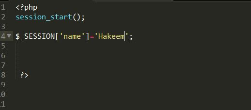

Php session
It is an alternative way to make data accessible across the various pages of an entire website. A session creates a file in a temporary directory on the server where registered session variables and their values are stored. This data will be available to all pages on the site during that visit. If you want to access the location of this temporary file open your php_info file look for a setting called session.save_path. Before using any session variable make sure you have setup this path.
Here’s what happens when you start a session,
- PHP first saves a unique identifier for that particular session as a random string of 32 hexadecimal numbers 9b7eoj74c3hj973hjkop2kc936e3547
- A cookie called PHPSESSID is automatically sent to the user's computer to store unique session identification string.
- A file is automatically generated on the server. It is saved on a temporary directory and it bears the name of the unique identifier prefixed by sess_ (e.g sess_9b7eoj74c3hj973hjkop2kc936e3547)
When one intends to obtain the value from a session variable, PHP automatically gets the identifier string from the PHPSESSID cookie and then looks in its temporary directory for the file bearing that name and a validation can be done by comparing both values.
A session ends when the user loses the browser or after leaving the site, the server will terminate the session after a predetermined period of time, commonly 30 minutes duration. Starting a session
Before you do anything with session data

Enter a session start as above. It has to be the first thing at the top of a page before you do anything involving session data. If you attempt to collect data above session_start(), It will not work because session has to start before we do anything with it. To store a variable in a session it has to bw stored as an associative array in the form,

With this, information in this page can be used in all other pages as long as the session is alive.
During a session
To access info from this page, here what we can do
You see that the info has been transferred from page1.php to page2.php?
This is how amazon builds your shopping cart, and facebook recognises it’s you online, and a certain website remembers your preference from a previous moment (as long as you are logged in).
From the above code (fig4), first the session is started, then it checks if $_SESSION has been set, if this has been set, it then echo’s it.
Ending a session
To end a session two commands are involved, unset() and session_destroy(). Unset cleans up a single variable e.g From the above we have unset the variable name. if you try to echo $name
From the above we have unset the variable name. if you try to echo $name

You get this message indicating that the variable isn’t defined

Now if you destroy a session,
It means you kill not just a particular variable, but all the variable stored for that particular session. This means that you have reset your session.
Here’s the command

How facebook stores your info for a really long time
Since session info is temporary(30 min lifespan), How is your preferences stored on facebook for a really long time,
This is where a cookie comes in. It stores that info on your computer. The next time you log into facebook , an authentication is carried out between the session_id on your computer and that on the server, once it’s a match the server will be able to access info on the cookie.
But say the site wants to store this for a really long time on it’s server (possibly permanently),
It will store the data in a database.